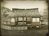

Shinobi
In Fall of the Samurai the shinobi acts as an assassin, spy, saboteur and scout, and is recruited via the traditional military building chain. In addition to their subterfuge skills, shinobi also increase the action points and line of sight of your armies when placed inside them. They can also establish spy networks within your cities, which in turn increase a province's line of sight. Shinobi are invisible to the enemy until detected. They are vulnerable to detection by shinsengumi and ishin shishi, and are exceptionally dangerous to geisha.
Recruitment Cost 500
Requires
-
Buildings:
- 